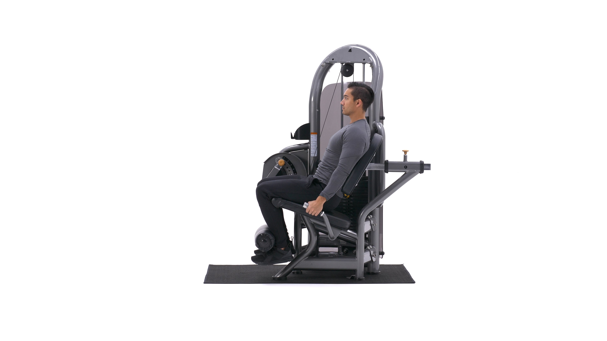
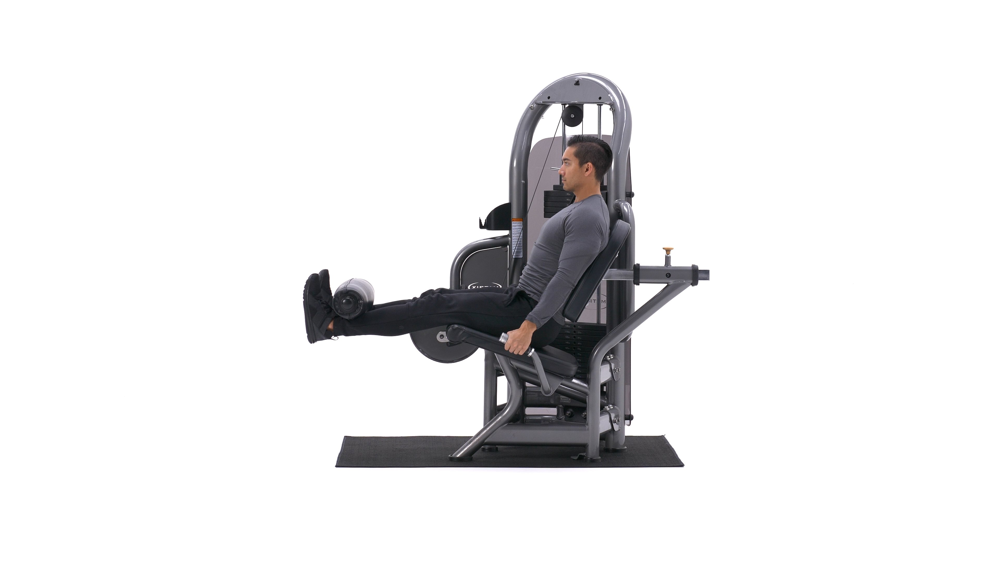

The leg extension is an isolation exercise for the quads.
1. For this exercise you will need to use a leg extension machine. First choose your weight and sit on the machine with your legs under the pad (feet pointed forward) and the hands holding the side bars. This will be your starting position. Tip: You will need to adjust the pad so that it falls on top of your lower leg (just above your feet). Also, make sure that your legs form a 90-degree angle between the lower and upper leg. If the angle is less than 90-degrees then that means the knee is over the toes which in turn creates undue stress at the knee joint. If the machine is designed that way, either look for another machine or just make sure that when you start executing the exercise you stop going down once you hit the 90-degree angle.
2. Using your quadriceps, extend your legs to the maximum as you exhale. Ensure that the rest of the body remains stationary on the seat. Pause a second on the contracted position.
3. Slowly lower the weight back to the original position as you inhale, ensuring that you do not go past the 90-degree angle limit.
4. Repeat for the recommended amount of times.
Variations: As mentioned at in the foot positioning section, you can use various foot positions in order to maximize stimulation of certain thigh areas. Also, you can perform the movement unilaterally (one leg at a time).
1. Builds size and strength in the quads.
2. Strengthens ligments that are connected to the knee joint, helping prevent injury.
3. Great accessory movement for a stronger squat.
This is the Leg Extensions in the down position.
This is the Leg Extensions in the up position.
